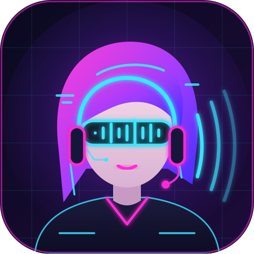
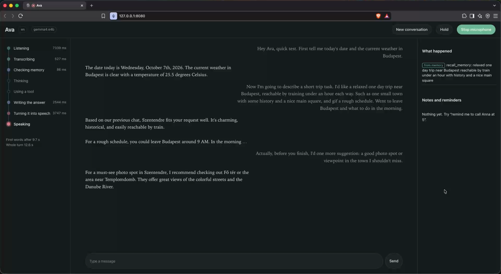

A private voice assistant that runs entirely on your Mac,
in English and Hungarian
I wanted an assistant I can simply talk to, in Hungarian or English, the way I would talk to a colleague. Cloud assistants send conversations to third parties, forget context between sessions and handle Hungarian poorly. My first prototype was a blocking five-second record, transcribe, generate, speak loop: Hungarian only, no tools, no memory and too slow to feel like a conversation.
voicemate is the rewrite. Speech recognition, the language model, memory and speech synthesis all run on the machine. Only explicit tool calls (web search, page fetch, arXiv, weather) go online, and each one is marked in the UI. The assistant's name ("Ava" by default) is just a setting.

A real session with the fast profile (gemma4:e4b): a tool-backed question about the date and weather,
then a trip-planning request interrupted mid-answer with a follow-up. The left rail shows each pipeline stage with its timing,
the right panel what was recalled from memory.
Each part is shown as the diagram it is built from. Hover a diagram to magnify it, click to open it full size.
Everything runs on the Mac. Speech starts while the answer is still being written, so a chat turn typically begins speaking 1-3 s after you stop talking.
A small graph: recall loads relevant memory, the agent calls the model with every tool bound, and tools run what it asks for.
Speak while it talks and it stops at once, remembers what you already heard, and treats your words as a correction or a new question.
The latency budget of a chat turn, from the last word you say to the first audio you hear.
interrupt().fast, gemma, qwen); a startup memory check falls back to fast if the chosen one would be paged out.make bench and make report give component benchmarks and a latency summary of recent turns.A personal, local-first project.
voicemate is developed on an Apple Silicon Mac (M4, 32 GB) with Ollama, needs about 15 GB of disk for the models and is not packaged on PyPI: you run it from a clone of the repository. The code and the diagrams above are the current state.
Stack: Python, LangGraph, Ollama, NiceGUI, LanceDB, Silero VAD, Parakeet (MLX), Piper, Kokoro. MIT licensed.